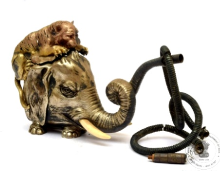

🔇 Is bhasha me is vastu ka audio abhi uplabdh nahi hai.
8. हुक्का

अभिलेख संख्या: XLIV-285
हुक्का एक बाघ के हाथी पर हमला करने के आकार में बना है। सुनहरी परत वाला बाघ एक काजदार छिद्रित ढक्कन के रूप में कार्य करता है। बाघ की आँखों में लाल पत्थर जड़े हुए हैं, जबकि हाथी की भी आँखें बनाई गई हैं। हाथी के छोटे दाँत हैं। मिट्टी का अंगीठी पात्र हाथी के खोखले पेट में स्थित है, जिस पर चाँदी की आवरण है। नीले रंग की धूम्रपान नली के दोनों सिरों पर चाँदी की जड़ी हुई माउंटिंग है और इसमें पेंचदार अगेट का मुँह वाला भाग लगा है। चाँदी के हुक्के अक्सर सजावटी वस्तु या पारंपरिक वैभव के प्रतीक के रूप में उपयोग किए जाते थे। चाँदी के हुक्कों का समृद्ध इतिहास है, विशेष रूप से मुगल भारत में, जिनके उदाहरण 18वीं शताब्दी तक मिलते हैं। यह हुक्का लंदन, यूनाइटेड किंगडम से उत्पन्न हुआ है और इसका निर्माण 1884–1885 के बीच का है।
8. हुक्का
अभिलेख संख्या: XLIV-285
हुक्का एक बाघ के हाथी पर हमला करने के आकार में बना है। सुनहरी परत वाला बाघ एक काजदार छिद्रित ढक्कन के रूप में कार्य करता है। बाघ की आँखों में लाल पत्थर जड़े हुए हैं, जबकि हाथी की भी आँखें बनाई गई हैं। हाथी के छोटे दाँत हैं। मिट्टी का अंगीठी पात्र हाथी के खोखले पेट में स्थित है, जिस पर चाँदी की आवरण है। नीले रंग की धूम्रपान नली के दोनों सिरों पर चाँदी की जड़ी हुई माउंटिंग है और इसमें पेंचदार अगेट का मुँह वाला भाग लगा है। चाँदी के हुक्के अक्सर सजावटी वस्तु या पारंपरिक वैभव के प्रतीक के रूप में उपयोग किए जाते थे। चाँदी के हुक्कों का समृद्ध इतिहास है, विशेष रूप से मुगल भारत में, जिनके उदाहरण 18वीं शताब्दी तक मिलते हैं। यह हुक्का लंदन, यूनाइटेड किंगडम से उत्पन्न हुआ है और इसका निर्माण 1884–1885 के बीच का है।
8. హుక్కా
Acc No: XLIV-285
ఈ హుక్కా 1884 & 1885 నాటి లండన్, UK కి చెందిన కళాఖండం. దీనిని పులి ఏనుగుపై దాడి చేస్తున్న ఆకారంలో రూపొందించారు. బంగారు పూత వేసిన పులి కీలుతో కూడిన, రంధ్రాలు ఉన్న మూతగా ఉపయోగపడుతుంది. పులి కళ్ళలో ఎరుపు రంగు రాయి అమర్చబడింది, అలాగే ఏనుగుకు కూడా కనుగుడ్లు ఉన్నాయి. ఏనుగుకు చిన్న దంతాలు ఉన్నాయి. ఏనుగు ఖాళీ కడుపులో వెండి కవర్తో కూడిన మట్టి అగ్ని పాత్ర ఉంది. నీలం రంగు పొగ గొట్టానికి రెండు చివర్లలో వెండి అమరికలు మరియు తిప్పడానికి వీలున్న అగేట్ మౌత్పీస్ ఉన్నాయి. వెండి హుక్కాలు తరచుగా అలంకార వస్తువుగా లేదా సాంప్రదాయ విలాసానికి చిహ్నంగా ఉపయోగించబడతాయి, మరియు ముఖ్యంగా మొఘల్ భారతదేశంలో వీటి చరిత్ర 18వ శతాబ్దం నాటికే ఉంది.
۸. حقہ
Acc No: XLIV-285
یہ حقہ ایک شیر کے طور پر بنایا گیا ہے جس میں ایک شیر ہاتھی پر حملہ آور ہے ۔ سنہری رنگ کا شیر قبضہ دار اور جالی دار ڈھکن کے طور پر کام کرتا ہے۔ شیر کی آنکھوں میں سرخ پتھر جڑے ہوئے ہیں، جبکہ ہاتھی کی آنکھوں کو بھی نمایاں طور پر ابھارا گیا ہے۔ ہاتھی کے چھوٹے دانت یعنی عاج نمایاں ہیں۔ ہاتھی کے خالی پیٹ میں مٹی کا آتشدان یعنی چلم چاندی کے ڈھکن کے ساتھ رکھا گیا ہے۔ جس پر چاندی کا غلاف چڑھایا گیا ہے۔
نیلے رنگ کا تمباکو نوشی کی پائپ، جس کے دونوں کناروں پر چاندی کی جڑائی ہے اور پیچ دار عقیق کا ماؤتھ پیس لگا ہوا ہے، چاندی کا حقہ عموماً سجاوٹی اشیاء یا روایتی عیش و آرام کی علامت کے طور پر استعمال ہوتے تھے۔ خاص طور پر ہندوستان میں مغل عہد میں اس کی نمایاں روایت ملتی ہے ، جس کی مثالیں اٹھارہویں صدی سے موجود ہیں۔ یہ حقہ لندن برطانیہ سے تعلق رکھتا ہے اور اٹھارہ سو چوراسی و اٹھارہ سو پچاسی کا ہے۔
৮. হুক্কা
Acc No: XLIV-285
একটি বাঘ হাতির ওপর আক্রমণ করছে এমন আকৃতিতে তৈরি একটি হুক্কা। সোনা দিয়ে মোড়ানো বা গিল্টি করা বাঘের অংশটি ফুটোযুক্ত কব্জাওয়ালা ঢাকনা হিসেবে কাজ করে। বাঘের চোখে লাল পাথর বসানো আছে మరియు হাতির চোখেও গোলাকার চোখের মণি ফুটিয়ে তোলা হয়েছে। হাতির ছোট দুটি দাঁত রয়েছে। হাতির ফাঁপা পেটের ভেতরে একটি মাটির পাত্র রয়েছে, যা রুপোর ঢাকনা দিয়ে ঢাকা। নীল রঙের ধূমপানের নলের দুই প্রান্তে রুপোর মাউন্ট লাগানো আছে এবং এর মুখটিতে পেঁচানো অ্যাগেট পাথর বসানো আছে। রুপোর হুক্কা সাধারণত সাজসজ্জার উপকরণ হিসেবে বা ঐতিহ্যবাহী অভিজাত্যের প্রতীক হিসেবে ব্যবহৃত হতো। বিশেষ করে মুঘল ভারতে রুপোর হুক্কার সমৃদ্ধ ইতিহাস রয়েছে, যার নিদর্শন ১৮ শতক থেকে পাওয়া যায়। এই হুক্কাটি যুক্তরাজ্যের লন্ডনে তৈরি এবং এটি ১৮৮৪-১৮৮৫ সালের মধ্যবর্তী সময়ে নির্মিত।
8. હુક્કો
Acc No: XLIV-285
આ હુક્કો વાઘ હાથી પર હુમલો કરી રહ્યો હોય તેવા આકારમાં બનાવાયેલ છે. સોનાથી મઢાયેલો વાઘ છિદ્રવાળું હિન્જવાળું ઢાંકણું તરીકે કાર્ય કરે છે. વાઘની આંખોમાં લાલ પથ્થર જડિત છે, જ્યારે હાથીની આંખોમાં પણ ગોળ આંખના બોલ દેખાય છે. હાથીને નાના દાંત (દંત) આપેલા છે. હાથીના ખાલી પેટના ભાગમાં ચાંદીથી આવરાયેલ માટીનો અગ્નિપાત્ર (ફાયર પોટ) મૂકાયેલ છે. વાદળી રંગની ધુમ્રપાનની નળી (સ્મોકિંગ પાઇપ)ના બંને છેડાઓ પર ચાંદીના માઉન્ટ્સ છે અને સ્ક્રૂ પ્રકારનું અગેટ મોઢાપાત્ર (માઉથ પીસ) જોડાયેલ છે. ચાંદીના હૂકાહનો ઉપયોગ સામાન્ય રીતે શોભાના ઉપકરણ તરીકે અથવા પરંપરાગત વૈભવના પ્રતીક તરીકે થતો હતો. ચાંદીના હૂકાહનો ઇતિહાસ સમૃદ્ધ છે, ખાસ કરીને મુગલ ભારતમાં, જ્યાં તેના ઉદાહરણો 18મી સદીથી જોવા મળે છે. આ હૂકાહ લંડન, યુનાઇટેડ કિંગડમમાંથી ઉત્પન્ન થયેલ છે અને તેનો સમય 1884 અને 1885નો માનવામાં આવે છે.
8. ಹುಕ್ಕಾ
Acc No: XLIV-285
ಹುಲಿಯೊಂದು ಆನೆಯ ಮೇಲೆ ದಾಳಿ ಮಾಡುತ್ತಿರುವಂತೆ ವಿನ್ಯಾಸಗೊಳಿಸಲಾದ ಹುಕ್ಕಾದ ಅದ್ಭುತ ಕಲಾಕೃತಿ ಇದಾಗಿದೆ. ಚಿನ್ನದ ಲೇಪನವನ್ನು ಹೊಂದಿರುವ ಈ ಹುಲಿಯು, ಕೀಲುಗಳಿಂದ ಕೂಡಿದ ಹಾಗೂ ರಂಧ್ರಗಳಿರುವ ಮುಚ್ಚಳವಾಗಿ ಕಾರ್ಯನಿರ್ವಹಿಸುತ್ತದೆ. ಹುಲಿಯ ಕಣ್ಣುಗಳಲ್ಲಿ ಕೆಂಪು ಹರಳುಗಳನ್ನು ಅಳವಡಿಸಲಾಗಿದ್ದು, ಆನೆಗೂ ಕೂಡ ಕಣ್ಣಿನ ಗುಡ್ಡೆಗಳಿವೆ ಮತ್ತು ಆನೆಯು ಸಣ್ಣ ದಂತಗಳನ್ನು ಹೊಂದಿದೆ. ಆನೆಯ ಟೊಳ್ಳಾದ ಹೊಟ್ಟೆಯ ಭಾಗದಲ್ಲಿ, ಬೆಳ್ಳಿಯ ಮುಚ್ಚಳವಿರುವ ಮಣ್ಣಿನ ಬೆಂಕಿಯ ಮಡಕೆಯನ್ನು ಇರಿಸಲಾಗಿದೆ. ನೀಲಿ ಬಣ್ಣದ ಸೇದುವ ಕೊಳವೆಯು ಎರಡೂ ತುದಿಗಳಲ್ಲಿ ಬೆಳ್ಳಿಯ ಹೊದಿಕೆಯನ್ನು ಹೊಂದಿದ್ದು, ಅಗೇಟ್ ಕಲ್ಲಿನಿಂದ ಮಾಡಿದ ತಿರುಪಿನ ಮಾದರಿಯ ಬಾಯಿಯ ಭಾಗವನ್ನು ಹೊಂದಿದೆ. ಬೆಳ್ಳಿಯ ಹುಕ್ಕಾಗಳನ್ನು ಹೆಚ್ಚಾಗಿ ಅಲಂಕಾರಿಕ ವಸ್ತುವಾಗಿ ಅಥವಾ ಸಾಂಪ್ರದಾಯಿಕ ಐಷಾರಾಮದ ಸಂಕೇತವಾಗಿ ಬಳಸಲಾಗುತ್ತದೆ. ಬೆಳ್ಳಿಯ ಹುಕ್ಕಾಗಳು ಶ್ರೀಮಂತ ಇತಿಹಾಸವನ್ನು ಹೊಂದಿವೆ, ವಿಶೇಷವಾಗಿ ಮೊಘಲರ ಭಾರತದಲ್ಲಿ 18ನೇ ಶತಮಾನದಷ್ಟು ಹಿಂದಿನ ಉದಾಹರಣೆಗಳನ್ನು ನಾವು ಕಾಣಬಹುದು. ಯುನೈಟೆಡ್ ಕಿಂಗ್ಡಮ್ನ ಲಂಡನ್ನಲ್ಲಿ ರೂಪುಗೊಂಡಿರುವ ಹುಕ್ಕಾದ ಈ ಅದ್ಭುತ ಕಲಾಕೃತಿಯು 1884 ಮತ್ತು 1885ರ ಕಾಲಘಟ್ಟಕ್ಕೆ ಸೇರಿದೆ.
୮. ହୁକ୍କା
Acc No: XLIV-285
ଏହା ଗୋଟିଏ ହୁକ୍କା ଯେଉଁଥିରେ ଆମେ ଦେଖିପାରିବା ବାଘଟିଏ ହାତୀର ମୁଣ୍ଡ ଉପରେ ଆକ୍ରମଣ କରୁଥିବା ଆକୃତିରେ ତିଆରି ହୋଇଅଛି, ଏହା ଅତ୍ୟନ୍ତ ଶିଳ୍ପମୟ ଓ ଆକର୍ଷଣୀୟ ମନେ ହୋଇଥାଏ। ସୁନା ରଙ୍ଗରେ ପାଲିସ୍ ହୋଇଥିବା ବାଘଟି, ଏହି ହୁକ୍କାର ଢ଼ାଙ୍କୁଣୀ ଅଟେ, ଯାହାକୁ ଖୋଲା ଯାଇ ପାରିବ। ବାଘର ଆଖିରେ ନାଲି ରଙ୍ଗର ମଣି ଲାଗିଛି ଏବଂ ହାତୀର ଚକ୍ଷୁରେ ମଧ୍ୟ ବଲ୍ ସଦୃଶ ଡୋଳା ଖୋଦିତ ହୋଇଛି। ହାତୀର ଛୋଟ ଦାନ୍ତ ଥିବାର ଏଠାରେ ଦେଖିପାରିବା। ହାତୀର ପେଟରେ ମାଟିର ଚୁଲା ସଦୃଶ ପାତ୍ର ତିଆରି ହୋଇଛି, ଯାହାକୁ ରୂପାର ଢାଙ୍କୁଣୀ ଦ୍ୱାରା ଆବୃତ୍ତ କରା ଯାଇଛି। ନୀଳ ରଙ୍ଗର ଧୂମ୍ରପାନ ନଳୀର ଦୁଇ ପ୍ରାନ୍ତରେ ରୂପା ମାଉଣ୍ଟ୍ ଲଗାଯାଇଛି ଏବଂ ଏହାର ମୁଖ ଭାଗ ଏଗେଟ୍ ସ୍କ୍ରୁ ଧରଣର ଆକୃତିରେ ତିଆରି। ରୂପାର ହୁକା ପ୍ରାୟତଃ ଆଳଙ୍କାରିକ ବସ୍ତୁ ଭାବେ ବା ପାରମ୍ପରିକ ଆଡ଼ମ୍ବର ଓ ସମ୍ପନ୍ନତାର ପ୍ରତୀକ ଭାବରେ ବ୍ୟବହୃତ ହୋଉଥିଲା। ରୂପାରେ ନିର୍ମିତ ହୁକ୍କାର ଏକ ସମୃଦ୍ଧ ଇତିହାସ ରହିଛି, ବିଶେଷକରି ମୋଗଲ ଶାସନ ସମୟରେ ଭାରତରେ ଦେଖିବାକୁ ମିଳିଥାଏ, ଯାହାର ଉଦାହରଣ ଅଷ୍ଟାଦଶ ଶତାବ୍ଦୀରୁ ଦେଖିବାକୁ ମିଳୁଛି। ଏହି ହୁକ୍କା ଯୁକ୍ତ ରାଷ୍ଟ୍ରର, ଲଣ୍ଡନରେ ନିର୍ମିତ ହୋଇଛି। ଏହା ଅଠର ଶହ ଚଉରାଶି ରୁ ଅଠର ଶହ ପଞ୍ଚାଅଶି ମସିହା ମଧ୍ୟରେ ତିଆରି କରାଯାଇଥିଲା।
8. हुक्का
अभिलेख संख्या: XLIV-285
हुक्का एक बाघ के हाथी पर हमला करने के आकार में बना है। सुनहरी परत वाला बाघ एक काजदार छिद्रित ढक्कन के रूप में कार्य करता है। बाघ की आँखों में लाल पत्थर जड़े हुए हैं, जबकि हाथी की भी आँखें बनाई गई हैं। हाथी के छोटे दाँत हैं। मिट्टी का अंगीठी पात्र हाथी के खोखले पेट में स्थित है, जिस पर चाँदी की आवरण है। नीले रंग की धूम्रपान नली के दोनों सिरों पर चाँदी की जड़ी हुई माउंटिंग है और इसमें पेंचदार अगेट का मुँह वाला भाग लगा है। चाँदी के हुक्के अक्सर सजावटी वस्तु या पारंपरिक वैभव के प्रतीक के रूप में उपयोग किए जाते थे। चाँदी के हुक्कों का समृद्ध इतिहास है, विशेष रूप से मुगल भारत में, जिनके उदाहरण 18वीं शताब्दी तक मिलते हैं। यह हुक्का लंदन, यूनाइटेड किंगडम से उत्पन्न हुआ है और इसका निर्माण 1884–1885 के बीच का है।
8. ഹുക്ക
Acc No: XLIV-285
ആനയെ ആക്രമിക്കുന്ന ഒരു കടുവയുടെ രൂപത്തിൽ അതിസൂക്ഷ്മമായി കൊത്തിയെടുത്ത അത്യപൂർവ്വമായ ഒരു ഹുക്കയാണിത്. സ്വർണ്ണം പൂശിയ കടുവയുടെ രൂപമാണ് ഇതിൻ്റെ സുഷിരങ്ങളുള്ള മൂടിയായി പ്രവർത്തിക്കുന്നത്. കടുവയുടെ കണ്ണുകളിൽ ചുവന്ന കല്ലുകൾ പതിപ്പിച്ചിരിക്കുന്നു; ആനയുടെ കണ്ണുകളും കൊമ്പുകളും ജീവൻ തുടിക്കുന്ന രീതിയിൽ ആവിഷ്കരിച്ചിട്ടുണ്ട്. ആനയുടെ പൊള്ളയായ വയറിനുള്ളിൽ വെള്ളി മൂടിയോടു കൂടിയ മൺപാത്രമാണ് കൽക്കരിയും പുകയിലയും വെക്കാൻ ഉപയോഗിക്കുന്നത്. നീല നിറത്തിലുള്ള പുകവലി കുഴലിൻ്റെ ഇരുവശങ്ങളിലും വെള്ളി ആവരണങ്ങളും, അഗ്രഭാഗത്ത് അഗേറ്റ് കല്ല് കൊണ്ട് നിർമ്മിച്ച വായവട്ടവും ഘടിപ്പിച്ചിരിക്കുന്നു..
വെള്ളി ഹുക്കകൾ പലപ്പോഴും ഒരു അലങ്കാരവസ്തുവായോ പാരമ്പര്യ പ്രൗഢിയുടെ പ്രതീകമായോ ആണ് കണക്കാക്കപ്പെടുന്നത്. പതിനെട്ടാം നൂറ്റാണ്ടിലെ മുഗൾ കാലഘട്ടം മുതൽ ഭാരതത്തിൽ ഇവയ്ക്ക് സമ്പന്നമായ ചരിത്രമുണ്ട്. ലണ്ടനിൽ (യു കെ) നിർമ്മിക്കപ്പെട്ട ഈ വിശിഷ്ട കലാസൃഷ്ടി 1884-85 കാലഘട്ടത്തിലേതാണ്.
വെള്ളി ഹുക്കകൾ പലപ്പോഴും ഒരു അലങ്കാരവസ്തുവായോ പാരമ്പര്യ പ്രൗഢിയുടെ പ്രതീകമായോ ആണ് കണക്കാക്കപ്പെടുന്നത്. പതിനെട്ടാം നൂറ്റാണ്ടിലെ മുഗൾ കാലഘട്ടം മുതൽ ഭാരതത്തിൽ ഇവയ്ക്ക് സമ്പന്നമായ ചരിത്രമുണ്ട്. ലണ്ടനിൽ (യു കെ) നിർമ്മിക്കപ്പെട്ട ഈ വിശിഷ്ട കലാസൃഷ്ടി 1884-85 കാലഘട്ടത്തിലേതാണ്.